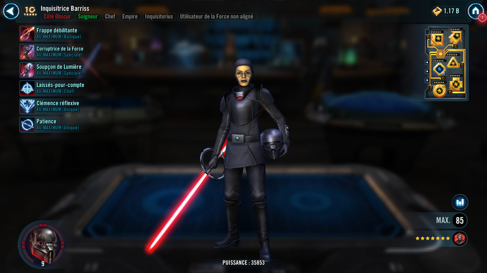

Inquisitor Barriss
Once a Jedi guided by the light side, now a ruthless Inquisitor delivering judgment in the name of the Empire
Once a Jedi guided by the light side, now a ruthless Inquisitor delivering judgment in the name of the Empire

Deal Special damage to target enemy and inflict them with a stack of Purge (max 6) until the end of encounter. Unaligned Force User allies recover 5% Health and Protection.
Gain 5 Siphon, which can't be dispelled, until the end of encounter.
Dispel all buffs and deal Special damage to all enemies. Inflict Buff Immunity for 2 turns on target enemy and Siphon Critical Damage from them.
If target enemy had 6 stacks of Purge, Buff Immunity can't be resisted and lower the cooldown of Flicker of the Light by 1.
Siphon Critical Damage: Gain a percentage of Critical Damage equal to this unit's Siphon until the end of encounter and the target loses that much Critical Damage (stacking, excludes raid bosses and Galactic Legends)
Dispel all debuffs on Unaligned Force User allies and they have their current Health percentages equalized. All Unaligned Force User allies recover 10% Health and Protection.
Recover an additional 5% Health and Protection for each stack of Purge that has been consumed by Inquisitorius allies or resisted by enemies in this battle (max 60%).
Inquisitor Barriss grants 20% of her Critical Damage (stacking) to allied Inquisitorius Attackers until the end of battle.
Inquisitorius allies gain 20% Max Health, and at the start of each of their turns, they recover 8% Health based on Inquisitor Barriss' Max Health.
Whenever an enemy gains a stack of Purge, Inquisitorius allies gain 3 Heal Over Time for 2 turns.
Whenever Purge is resisted by an enemy or dispelled on them, Inquisitorius allies gain 10% Offense (stacking) for 1 turn.
Omicron Boost : While in 3v3 Grand Arenas and if Grand Inquisitor is not an ally: Inquisitorius allies gain 30% Critical Chance and 50% Critical Damage.
Whenever an Inquisitorius ally critically hits an enemy, that enemy gains a stack of Purge (max 6), which can't be resisted, until the end of encounter.
Allied Second Sister is immune to Daze and Stun, and whenever Inquisitor Barriss uses an ability, Second Sister assists. This assist will critically hit if able.
At the end of each of Inquisitor Barriss' turns, reduce the cooldowns of Second Sister's abilities by 1.
Allies and enemies can't be revived.
Whenever an Inquisitorius ally is critically hit, that ally recovers 10% Health and Protection and that enemy gains a stack of Purge (max 6) until the end of encounter.
While Ninth Sister is Taunting, allied Second Sister and Inquisitor Barriss have 200% Defense and Tenacity, and allied Inquisitor Barriss is immune to Daze and Stun.
Whenever an enemy has any number of buffs dispelled, Inquisitor Barriss gains 10% Turn Meter.
At the start of battle, if all allies (minimum 3) are Inquisitorius, this character gains 20% Max Health, Max Protection, and Potency. Whenever another ally is critically hit by an enemy, this character has a 20% chance to gain 100% Turn Meter (limit once per turn). Whenever an Inquisitorius ally damages an enemy with Purge, this character assists. Whenever Purge is consumed or dispelled on an enemy, this character gains 3% Turn Meter.